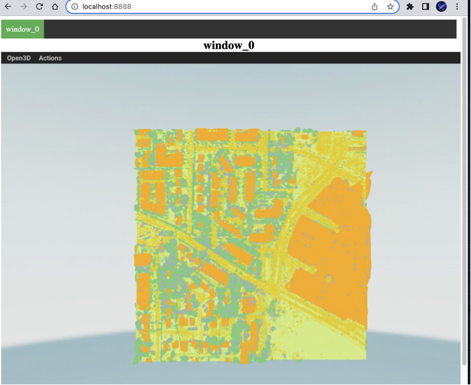
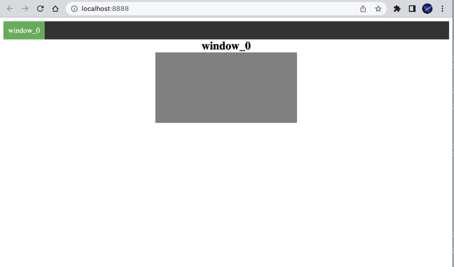
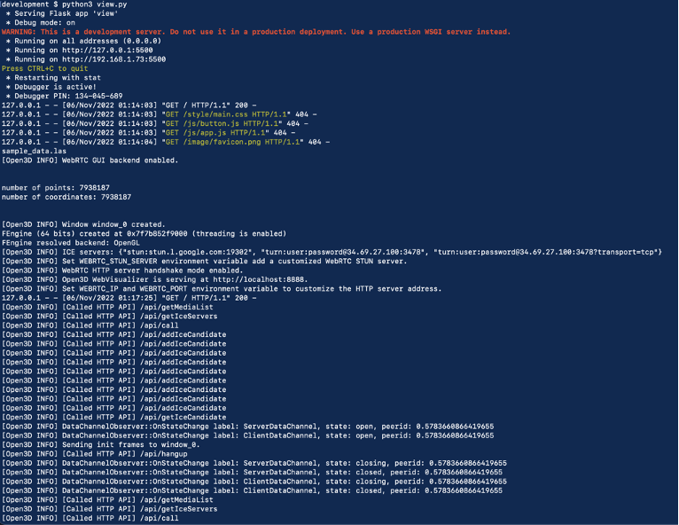

Project Update - Week 5
Sprint 4
This page summarizes the group activities and project progress in Week 5 (October 30 - November 5)
Sprint 4 Tasks
- Yuhao Hua
- Learn Python Flask framework
- Modify file upload part in html document
- Troubleshoot problems that Open3D doesn’t work on Macbook with apple silicon.
- Peinan Wang
- Update the code for data processing and visualization, so we can connect to Open3d’s WebRTC server and see the rendering in browser at localhost port 8888
- Luocheng Zhu
- Insert a 3D object into the website
- Start working on login function
- Use Font Awesome CDN and add fancy font styles
Progress
We are able to show the open3d window in browser. It works when we are running our visualization script directly in the terminal.
But when we run our web application and trigger the visualization function through a button click, the window is not showing properly. It is just a grey box, which means no Open3d Geometry object has been added to the window.
 